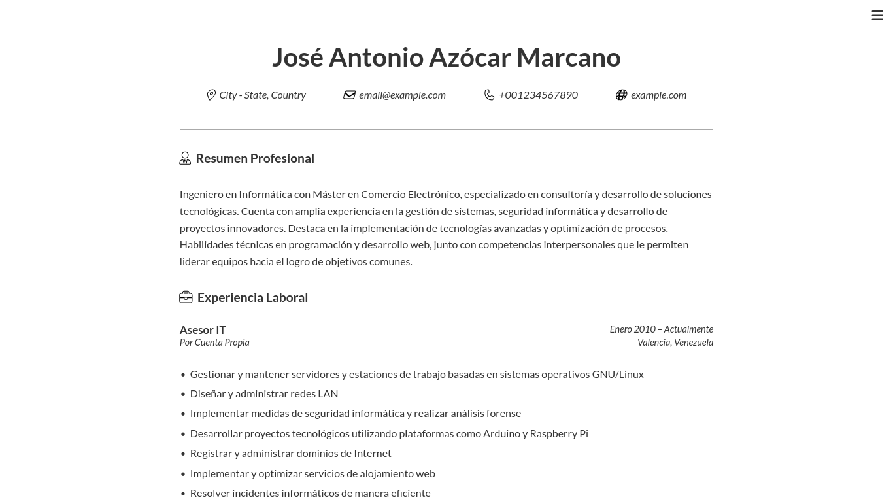

José Antonio Azócar Marcano
Informática | Ciberseguridad | Java/Python Dev | Backend | Datascience | Troubleshooting
Sobre Mí ...
Ingeniero en Informática con Máster en Comercio Electrónico, especializado en consultoría y desarrollo de soluciones tecnológicas. Cuenta con amplia experiencia en la gestión de sistemas, seguridad informática y desarrollo de proyectos innovadores. Destaca en la implementación de tecnologías avanzadas y optimización de procesos. Habilidades técnicas en programación y desarrollo web, junto con competencias interpersonales que le permiten liderar equipos hacia el logro de objetivos comunes.
Asesorías IT
-
Informática
Administración de servidores y estaciones de trabajo con GNU/Linux, garantizando un rendimiento óptimo y alta disponibilidad. Además, se desarrollan soluciones con Raspberry Pi y Arduino, permitiendo la creación de aplicaciones de Internet de las Cosas (IoT).
-
Ciberseguridad
Diseño e implementación de estrategias para mitigar riesgos y asegurar la continuidad operativa de la infraestructura informática, abarcando el análisis forense y la respuesta inmediata a incidentes. Con ello, se garantiza la integridad, confidencialidad y disponibilidad de los datos del cliente.
-
Java/Python Developer
Programación de aplicaciones robustas y escalables, personalizadas según las necesidades del cliente. Para su implementación, se utiliza Java en sistemas de alto rendimiento y Python en la automatización de procesos y el análisis de datos, asegurando en todo momento un código limpio y eficiente.
-
Backend
Diseño y optimización de la lógica, las bases de datos y las interfaces de comunicación entre sistemas y servicios, para asegurar un rendimiento eficiente, una integración fluida y la escalabilidad en el uso de los datos del modelo de negocio.
-
Datascience
Desarrollo de soluciones basadas en el análisis de datos, con el propósito de optimizar procesos y robustecer la toma de decisiones estratégicas. Para lograrlo, se utiliza Python en la generación de modelos predictivos, análisis estadístico y visualización de datos.
-
Troubleshooting
Resolución eficaz de incidentes informáticos, mediante un análisis exhaustivo y un diagnóstico preciso de problemas de hardware, software y redes, asegurando así la continuidad operativa y la satisfacción del cliente.
Formación Académica
-

Mtr. en Comercio Electrónico
Univ. "Carlos III de Madrid"
-

Ing. en Informática
Univ. "Alejandro de Humboldt"
-

TSU. en Computación
Inst. Univ. de "Nuevas Profesiones"
Challenges
-
Currículum
 -
Portafolio

-
Juego del Ahorcado

Contacto
¿Necesita un especialista en Tecnologías de la Información para su próximo proyecto?
Le invito a completar el formulario. A la brevedad, me comunicaré con usted para concertar una entrevista, en la cual analizaremos sus requerimientos y el valor que mi experiencia puede aportar a su iniciativa.